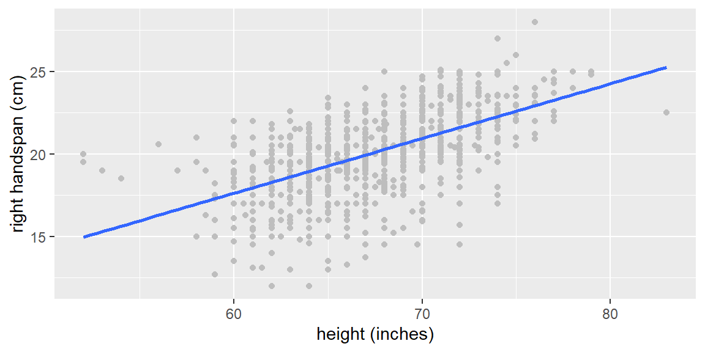
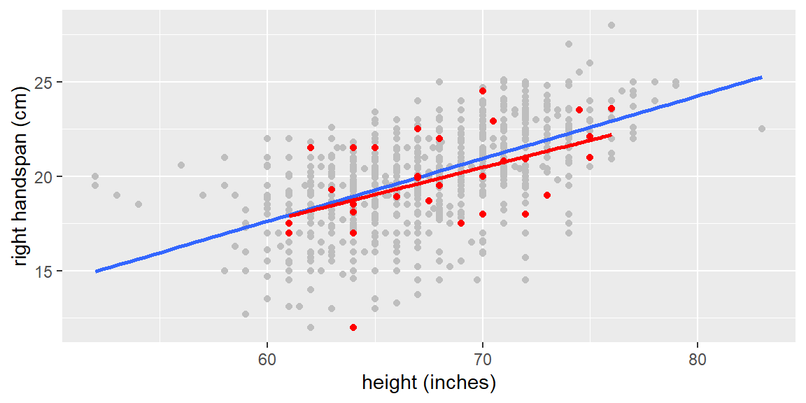
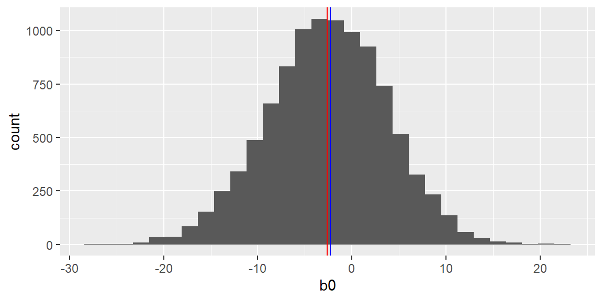
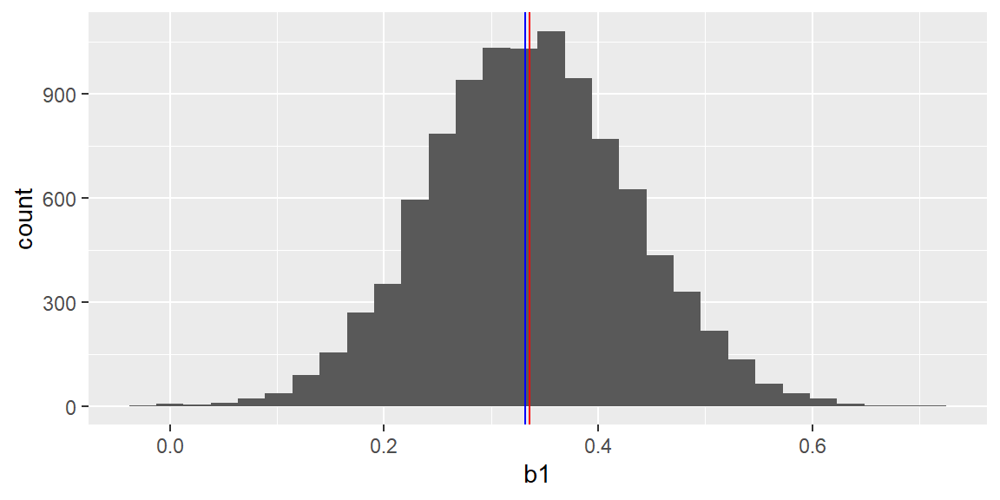
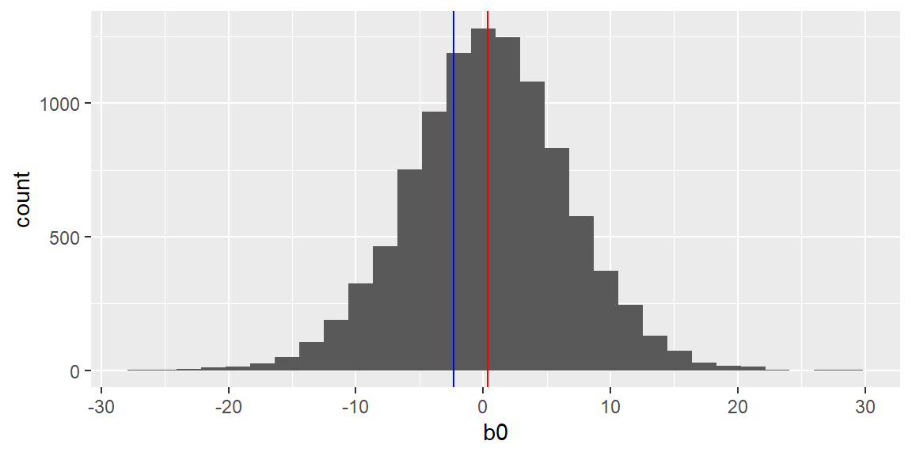
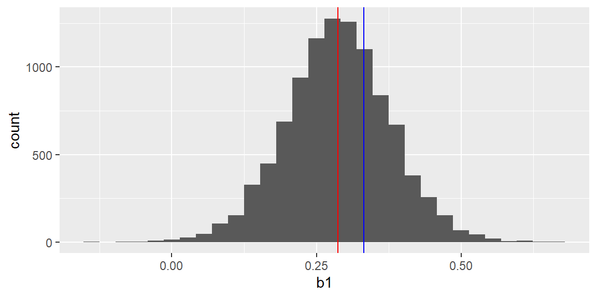

“And I knew exactly what to do. But in a much more real sense, I had no idea what to do.” - Michael Scott
We discussed checking the assumptions of a simple linear regression model in Chapter 7 and Chapter 8. For multiple regression, we have already discussed the linearity assumption in Chapter 16 and multicollinearity in Chapter 14. We will now revisit the remaining assumptions of the multiple regression model and present some remedial measures.
21.1 Assumptions for the Multiple Regression Model
For the normal errors multiple regression model in Equation 11.1 we need to check the assumptions.
We will use the residuals here as we did in simple regression.
Let’s begin by listing all of the assumptions for the model in Equation 11.1:
Linearity: There is a linear relationship between \(y\) and each of the predictor variables. (see Chapter 16)
Normality of the residuals: In the normal error model, the error terms should be approximately normally distributed. 3.Constant variance: The variance of the error terms should be constant throughout the range of the predictor variables. 4.Independence of the residuals: We assume the error terms are independent of each other. 5.Uncorrelated predictor variables: There is no multicollinearity present between the predictor variables (see Chapter 14).
#3# Normality and Transformations
We can check normality as we did in simple regression by plotting the residuals in a QQ plot or by using the Shapiro Wilk test.
It is good practice to do both so that you can get a formal test and a visualization.
If the data are not normally distributed, then a transformation on \(y\), such as a Box-Cox transformation may be helpful.
21.1.1 Box-Cox Transformation
In the Box-Cox transformation, a procedure is used to determine a power (\(\lambda\)) of \(y\)\[
\begin{align*}
Y^\prime =& \frac{Y^\lambda - 1}{\lambda} &\text{ if }\lambda\ne 0\\
Y^\prime =& \ln Y & \text{ if }\lambda= 0
\end{align*}
\] that results in a regression fit with residuals as close to normality as possible.
In tidymodels, we can conduct a Box-Cox transformation using step_BoxCox in the recipe.
Example 21.1 (Handspan data) Let’s look at the handspan data first examine in Example 15.1.
We see that the transformation dampened the skewness of residuals but they are still nonnormal. The Box-Cox transformation does not guarantee the result will be normal, but is attempts to make it closer to normal.
If we would like to see the value of \(\lambda\) used in step_BoxCox, we can do so with the following:
#use number = 3 since step_BoxCox is the third step in the recipeprep(dat_recipe_bc, training = dat) |>tidy(number=3)
# A tibble: 1 × 3
terms value id
<chr> <dbl> <chr>
1 right handspan (cm) 1.75 BoxCox_GL1SZ
One downside to transformations on \(y\) is that the interpretability on the confidence intervals may be difficult to grasp.
For example, if we have a confidence interval for the mean response where \(y\) was log-transformed as \((.35, .78)\), we could back transform by doing the inverse function of log which is the exponential function. So we would have \((\exp(.35), \exp(.78)=(1.419, 2.181)\). However, this is not a confidence interval for the mean \(y\), it is instead a confidence interval for the median \(y\).
Other back transformations may not have this interpretation. If the transformation is not monotonic, then the backtransformed confidence interval may not have the desired coverage.
Thus, a transformation may not be the best option if the goal is to obtain confidence and prediction intervals for the response.
21.1.2 Independence
We can visualize the correlation by using a acf plot.
A formal test for significant autocorrelation is the Breusch-Godfrey Test as was used in simple linear regression.
If significant autocorrelation is present, then a time series model is necessary (beyond the scope of this course).
21.1.3 Constant Variance
We can visualize the variance of the residuals as we did in simple regression. A plot of the residuals versus the fitted values can be examined for the “cone” or “megaphone” shape.
We can also use the Breusch-Pagan test as we did in simple regression to formally test for nonconstant variance.
21.2 Remedial Measures
21.2.1 Overview of Assumptions and Remedial Measures
We will list again the assumptions of model Equation 11.1 and also discuss the problems violations of these assumptions present and what can be done when they are violated.
Linearity: Violating linearity will lead to incorrect conclusions about the relationship between \(y\) and the predictor variables and thus lead to incorrect estimations and predictions.
As discussed previously, a transformation on the \(x\) variables can help with linearity.
Normality of the residuals: The t-test, F-test, confidence intervals, and prediction intervals all depend on normality of the residuals (or at least symmetric distribution).
If we do not have normality, then we cannot do the inferences for the model. A transformation on \(y\) may help with normality (or at least get to a symmetric distribution), however, we tend to lose interpretation in our inferences.
If we cannot obtain normality through a transformation, or we wish to keep interpretation and not do a transformation, then we can still do inferences based on bootstrapping. We will discuss bootstrapping in more detail below.
Constant variance: Very much like the normality assumption, the constant variance assumption affects the inferences made for the model. Recall all the equations for the variance of the estimated coefficients (Equation 13.3), the variance of the mean response (Equation 13.10), and the variance of the prediction (Equation 13.13). Each involves MSE which is an estimate of the constant variance \(\sigma^2\). If \(\sigma^2\) is not constant, then MSE is not the estimator we need. We would need an estimator that takes into account the nonconstant variance.
Taking a transformation of \(y\) could help stabilize the variance, however, we would lose interpretation due to the transformation. Using a method known as weighted least squares (discussed below) can help with nonconstant variance.
Independence of the residuals: If there is significant autocorrelation in the residuals, then a time series model will be needed.
In simple regression, we discussed that a difference could be used to remove simple autocorrelation (see Chapter 8). The downside to doing a difference is that, once again, you lose interpretation in your inferences.
Uncorrelated predictor variables: Previously, we discussed the problems of having highly correlated predictor variables which is known as multicollinearity.
In some applications, it is very difficult to have a subset of predictor variables that do not have multicollinearity. When this is the case, we can use ridge regression or lasso.
21.2.2 Bootstrap Sampling
Repeated Sampling
If we were to repeatedly take a sample of size \(n\) from the population of interest and then find the least squares estimates each time, we could plot these estimates to estimate their sampling distributions. This is known as repeated sampling.
For example, let’s consider the handspan and height measurements from Example 15.1. These measurements were from 1102 college students. Suppose these students are now the population of interest.
We will take a random sample of \(n=30\) from this population of 1102 college students. We could look at all possible samples of size \(n=30\) and the resulting least squares estimates \(b_0\) and \(b_1\). This would give us the exact sampling distribution for each. In this example with a relatively small population size of 1102, the number of possible samples of size 30 is \[
\begin{align*}
\binom{1102}{30} & =4.6645012\times 10^{58}
\end{align*}
\]
It would be infeasible to examine this many samples, however, we could look at enough samples (tens of thousands) to get an estimate of the sampling distributions.
Let’s first get a scatterplot all 1102 population measurements. They are colored gray. The least squares line for the entire population is shown in blue.
dat =read_csv("SurveyMeasurements.csv")p1 = dat |>ggplot(aes(x=`height (inches)`, y=`right handspan (cm)`)) +geom_point(color ="gray") +geom_smooth(method="lm", se=FALSE)p1

Let’s now take a random sample of size \(n=30\). This sample will be shown as red points in the scatterplot below. The red line represents the fitted line for the sample.
set.seed(34)#to replicate resultsdat_sample =sample_n(dat, 30)fit_sample =lm(`right handspan (cm)`~`height (inches)`, data = dat_sample)p1 +geom_point(data=dat_sample, color ="red") +geom_smooth(data=dat_sample, method="lm", se=FALSE, color ="red")

The sample in the figure above is just one sample of size \(n=30\). Suppose we repeated this sampling and got a total of 10,000 samples of size \(n=30\) from the data. Each time, we fit the least squares line to the sample and save the y-intercept (\(b_0\)) and slope (\(b_1\)).
The plots below show the histograms of the least squares estimates \(b_0\) and \(b_1\) from the repeated sampling. The blue and red vertical lines in the histograms represent the population parameters and the mean of the estimates, respectively.
fit_all =lm(`right handspan (cm)`~`height (inches)`, data = dat)results =data.frame(b0 =numeric(10000), b1 =numeric(10000))for(i in1:nrow(results)){ dat_sample_c =sample_n(dat, 30) fit =lm(`right handspan (cm)`~`height (inches)`, data = dat_sample_c) results[i,1] = fit$coefficients[1] results[i,2] = fit$coefficients[2]}results |>ggplot(aes(x=b0))+geom_histogram() +geom_vline(xintercept=fit_all$coefficients[1], color ="blue")+geom_vline(xintercept =mean(results[,1]), color ="red")

results |>ggplot(aes(x=b1))+geom_histogram() +geom_vline(xintercept=fit_all$coefficients[2], color ="blue")+geom_vline(xintercept =mean(results[,2]), color ="red")

The equation of the population line is \[
y_i=-2.2859674+0.3318128 x_i
\]
The equation for the line for the first sample is \[
\hat{y}_i=0.353943+0.2874696 x_i
\]
Examining the histograms, we see the mean of all 10,000 \(b_0\)’s is -2.6025954 and the mean of all 10,000 \(b_1\)’s is 0.3363284.
We can get a good estimate of the sampling distributions by examining just ten thousand samples. The downside to using repeated sampling is that we usually only have one sample. Thus, we need a different approach that will allow us to estimate the sampling distributions with just the information in our one sample. We will explore one way to do this next.
21.2.3 Bootstrap
Bootstrapping is a method for estimating the sampling distribution of a statistic based on the observations of one sample.
This estimation is done by sampling with replacement of size \(n\) from the observed data. For each of these “bootstrap” samples, the estimator, both \(\hat{\beta}_0\) and \(\hat{\beta}_1\) in this case, is computed. This is done many times (usually thousands) so that the resulting distribution of these bootstrapped statistics provides an estimate for the sampling distribution of the statistic.
Suppose we only had a sample of size \(n=30\) from the handspan and height data. This sample is plotted below with the least squares line (both in red).
A sample of size \(n=30\) is taken from the red dots, with replacement. This bootstrapped sample are the black dots in the plot below. Note that some of the observations can be selected more than once due to sampling with replacement. This is why some of the points are still red.
The equation of the line for the sample (the red line in the plot above) is \[
\hat{y}_i=0.353943+0.2874696 x_i
\]
The equation for the line for the first bootstrap sample (the black line in the figure above) is \[
\hat{y}_i=5.7948976+0.2062484 x_i
\]
The \(b_0\)’s and \(b_1\)’s for 10,000 bootstrap samples are plotted in the histograms in the figure below.
results =data.frame(b0 =numeric(10000), b1 =numeric(10000))for(i in1:nrow(results)){ boot_sample =sample_n(dat_sample, 30, replace=TRUE) fit =lm(`right handspan (cm)`~`height (inches)`, data = boot_sample) results[i,1] = fit$coefficients[1] results[i,2] = fit$coefficients[2]}results |>ggplot(aes(x=b0))+geom_histogram() +geom_vline(xintercept=fit_all$coefficients[1], color ="blue")+geom_vline(xintercept = fit_sample$coefficients[1], color ="red")

results |>ggplot(aes(x=b1))+geom_histogram() +geom_vline(xintercept=fit_all$coefficients[2], color ="blue")+geom_vline(xintercept = fit_sample$coefficients[2], color ="red")

Examining the histograms, we see the mean of all 10,000 \(b_0\)’s is 0.3894754 and the mean of all 10,000 \(b_1\)’s is 0.2869148.
After generating 10,000 bootstrap estimates, we can get a good estimate of the sampling distributions of \(b_0\) and \(b_1\). Note, however, how these estimated distributions are centered at the least squares estimates of the observed sample (the red vertical lines) and not at the true population values (the blue vertical lines).
21.2.4 Bootstrap Intervals
We just discussed how to bootstrap the observations in order to estimated the sampling distributions for \(b_0\) and \(b_1\).
Based on the normality assumption, we could determine the sampling distributions for the coefficients theoretically without need to bootstrap.
When the normality assumption does not hold, then we can use the bootstrap to estimate the sampling distributions of the coefficients and for the mean response. We could also use it for the distribution of the predicted values.
Thus, we can still obtain confidence intervals for the coefficients, confidence intervals for the mean response, and prediction intervals even when normality does not hold.
Fixed Sampling vs Random Sampling
How the bootstrap works in regression is determined by the assumptions that hold for our model.
If the model is a good model for our data, the variance \(\sigma^2\) is constant, and the predictor variables are regarded as fixed, then we use fixed \(x\) sampling.
In fixed \(x\) sampling, the regression is fitted on the sample data and the fitted values, \(\hat{y}_i\), and the residuals, \(e_i\) are obtained. A bootstrap sample of size \(n\) are then obtained from the residuals which are denoted \(e^*_i\). The bootstrap \(y\) values are found as \[
\begin{align}
y^*_i = \hat{y}_i +e^*_i
\end{align}
\tag{21.1}\]
These bootstrapped \(y_i^*\) are regressed on the original predictor variables. This procedure is done a large number of times and the resulting distributions of the coefficients \(\hat{\beta}^*_i\) and fitted values \(\hat{y}^*_i\) can be used as estimates of the corresponding sampling distributions.
If there is doubt in adequacy of the model, the variance \(\sigma^2\) is not constant, and/or the predictor variables cannot be regarded as fixed, then we use random \(x\) sampling.
In random \(x\) sampling, the observations (including \(y\) and the predictor variables) are bootstrapped and then the resulting bootstrapped sample is used to fit the model.
Example 21.2 (fitness data) We will examine the fitness dataset from the olsrr library.
In this dataset, we want to predict the oxygen level of the participants based on six predictor variables.
library(tidyverse)library(tidymodels)library(olsrr)dat = fitnessdat_recipe =recipe(oxygen~., data = dat)model =linear_reg() |>set_engine("lm")wf =workflow() |>add_recipe(dat_recipe) |>add_model(model)# Create bootstrap samplesbootstraps =bootstraps(dat, times =10)# Fit the model to each bootstrap sampleboot_results <- bootstraps %>%mutate(model =map(splits, ~fit(wf, data =analysis(.x))),coeff =map(model, ~tidy(extract_fit_parsnip(.x))),mean_pred =map(splits, ~predict(fit(wf, data =analysis(.x)), assessment(.x))),pred_interval =map(splits, ~predict(fit(wf, data =analysis(.x)), assessment(.x), interval ="prediction")) )# Extract and calculate percentile CIs for coefficientscoefficients <-bind_rows(boot_results$coeff)ci_coefficients <- coefficients %>%group_by(term) %>%summarize(lower =quantile(estimate, 0.025),upper =quantile(estimate, 0.975) )print(ci_coefficients)
Sometimes a transformation on \(y\), such as a log transformation, can help stabilize nonconstant variance. However, if the linearity assumption between \(y\) and the predictor variables seem reasonable, then transforming \(y\) may violate the linearity assumption.
If we cannot transform \(y\), we can adjust model Equation 11.1 so that the variance term is allow to vary for different observations. Thus, we will have \[
\begin{align}
{\textbf{Y}}= & {\textbf{X}}{\boldsymbol{\beta}}+{\boldsymbol{\varepsilon}}\\
& \boldsymbol{\varepsilon} \overset{iid}{\sim} N\left(0,\sigma_i^{2}\right)
\end{align}
\tag{21.2}\]
The least squares estimators Equation 11.4 could still be used. These estimators are unbiased but they no longer have minimum variance. That is, they are no longer the BLUEs.
To obtain unbiased estimators with minimum variance, we must take into account the different variances for the different \(y\) observations. Observations with small variances provide more reliable information about the regression function than those with large variances.
Therefore, we will want to weight the observations on the fit based on the variances of the observations.
21.2.6 WLS Estimators
If the variances \(\sigma_{i}^{2}\) are known, we can specify the weights as \[
\begin{align}
w_{i} & =\frac{1}{\sigma_{i}^{2}}
\end{align}
\tag{21.3}\]
These weights can be included in the least squares estimators as \[
\begin{align}
{\bf b}_{w} & =\left({\bf X}^{\prime}{\bf W}{\bf X}\right)^{-1}{\bf X}^{\prime}{\bf W}{\bf Y}
\end{align}
\tag{21.5}\]
The estimated covariance matrix of the weighted least squares (wls) estimators is \[
\begin{align}
{\bf s}^{2}\left[{\bf b}_{w}\right] & =\left({\bf X}^{\prime}{\bf W}{\bf X}\right)^{-1}
\end{align}
\tag{21.6}\]
Compare this to the estimated covariance matrix for the ordinary (un-weighted) least squares (ols) estimators in Equation 13.3. Instead of using MSE for an estimate of \(\sigma^{2}\), Equation 21.6 uses the weight matrix which takes into account how the variance changes for different observations.
21.2.7 The Variance and Standard Deviation Functions
For the wls estimators in Equation 21.6, it is fairly straight forward if the variances \(\sigma^2_i\) are known. In practice, these variances will be unknown and need to estimated.
Most of the time, the variance will vary in some systematic pattern. For example, the cone shape.
We can estimate a pattern like this by first fitting the model without any weights. We then examine the absolute values of the residuals vs the fitted values. We can regress these absolute residuals on the fitted values. This fitted model will be an estimate of the standard deviation function. Squaring these fitted values gives us an estimate of the variance function. The reciprocal of this variance function provides an estimate of the weights.
Other systematic patterns in the residual plots may require other ways to obtain an estimated variance function.
For example, if the plot of the residuals against \(x_2\) suggests that the variance increases rapidly with increases in \(x_2\) up to a point and then increases more slowly, then we should regress the absolute residuals against \(x_2\) and \(x_2^2\).
If the wls estimates differs greatly from the ols estimates, it is common to take the squared or absolute residuals from the wls fit and then re-estimate the variance function. This is done again until the changes in the estimates become small between iterations.
This is known as iterativelyreweighted least squares (irls).
Example 21.3 (bloodpressure data) Let’s revisit the blood pressure data used in Example 7.2.
Let’s first fit a regression model using typical ordinary least squares.
dat =read.table("bloodpressure.txt", header=T)dat_recipe =recipe(dbp~age, data = dat)model =linear_reg() |>set_engine("lm")wf =workflow() |>add_recipe(dat_recipe) |>add_model(model)fit_ols = wf |>fit(dat)fit_ols |>tidy()
# A tibble: 2 × 5
term estimate std.error statistic p.value
<chr> <dbl> <dbl> <dbl> <dbl>
1 (Intercept) 56.2 3.99 14.1 2.36e-19
2 age 0.580 0.0970 5.98 2.05e- 7
We see clear evidence of heteroscedasticity. Let’s now use weighted least squares. We must first determine the weights. The absolute value of the residuals of the OLS fit is regressed on the fitted values of the OLS fit. The fitted values of this fit are then used to determine the weights.
#fit absolute residuals against fitted valuesresults = fit_ols |>extract_fit_engine() |>augment()fit_res =lm(abs(.resid)~.fitted, data = results)#the fitted values will be used for the weightsw =1/(fitted.values(fit_res)^2)
We can now add these weights to the workflow. We first specify that these are weights by adding it to the dataframe using importance_weights.
dat = dat |>mutate(weight =importance_weights(w) )dat_recipe =recipe(dbp~age+weight, data = dat) wf =workflow() |>add_case_weights(weight) |>add_recipe(dat_recipe) |>add_model(model)fit_wls = wf |>fit(dat)fit_wls |>tidy()
# A tibble: 2 × 5
term estimate std.error statistic p.value
<chr> <dbl> <dbl> <dbl> <dbl>
1 (Intercept) 55.6 2.52 22.0 4.81e-28
2 age 0.596 0.0792 7.53 7.19e-10
fit_ols |>tidy()
# A tibble: 2 × 5
term estimate std.error statistic p.value
<chr> <dbl> <dbl> <dbl> <dbl>
1 (Intercept) 56.2 3.99 14.1 2.36e-19
2 age 0.580 0.0970 5.98 2.05e- 7
Note the difference between the estimates for the weighted least squares and the estimates for the ordinary least squares. The \(R^2\) value is also higher using weighted least squares.